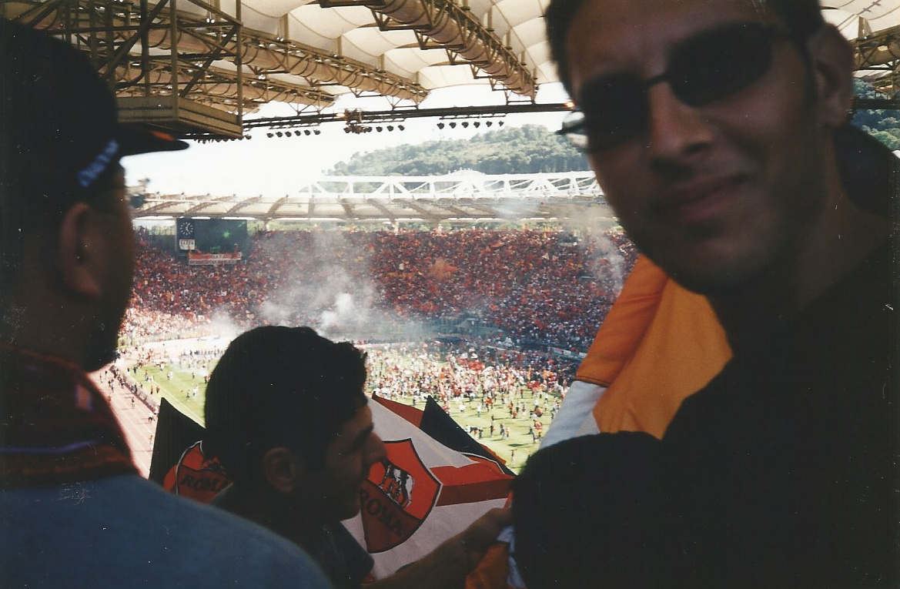

Igår sa jag inte så mycket, var tyst och ägnade mig åt Sitchin och Däniken nästan hela dagen. Idag läser jag högt ur Bibeln för skogens alla ansikten och flyttar på de pjäser som behöver flyttas. I förrgår sjöng jag Grazie Roma hela tio gånger, och redan efter tredje gången gick frugan in i sovrummet och stängde dörren efter sig (barnen på sina rum med hörlurar på). Imorgon ska jag ut i skogen, tidigt på morgonen, komma närmre ansiktena och göra mitt för laget, sjunga Roma Roma Roma tjugo gånger minst, tjugo gånger, locka Varginnan inför kvällen, se till att tevens innehåll rullar och studsar rätt. 2022-04-17
vasko sambevski
romanista & poet
”den väg stenarna utvunnit ur askan helt enkelt”
om blod och allt runtomkring

Olimpico, 17 juni 2001
Olimpico, 17 juni 2001 …
… och när natten sen kommer smygande för att lägga sina ägg i sitt villebråd inte fan ska jag streta emot sådär i tusen bitar sparka hit och dit och ramla här och där yla ”MITT RIKE FÖR EN VESPA! MITT RIKE FÖR EN VESPA!!” och somna på en parkbänk nånstans inte jag inte inatt. GRAZIE ROMA !
A N T O N E L L O ! ! ! namo MAESTRO . . .
vad var det Aspanu Pisciotta sa? kommer ni ihåg?
— I'm off to Palermo, sa han. och vad hände sen?
min skrivmaskin vägrar, min trogna Olivetti Studio 44 vägrar, säger ”glöm det…”, så jag får ta fram en blyerts, en staedtler som mer än gärna ställer upp, medan kollegieblocket bara rycker på axlarna, Italien-Nordmakedonien 0-1, är det mitt fel? mitt? hur är jag skyldig? har jag älskat Italia för mycket? är det så? älskat gli azzurri alldeles för mycket? jag en macedone, och detta är straffet? 2022-03-25
jag säger samma sak som Diego sa
Diego Maradona: ”Francesco Totti, the king of Rome! He is, and will be, the best player I ever saw [in my life].” 2022-03-24
en otäck dröm
”Alltings Moder måste väl ha brustit långt innan du föddes [ och med Alltings Moder menar jag den goda av de två den onda kan aldrig brista ] jag tänker nånstans i turbulensen kring skarven mellan en Resa till nattens ände och En tid i helvetet måste Alltings Moder ha brustit och börjat sina och jag tänker efter uppskjutningen av Slutet på andra sidan Atlanten och närapå en tusen mil in där sumpmarken förmodligen legat blinkande röd och stilla en längre tid måste Hon ha bestämt sig för att fly för att överleva själv stackarn i sex hela år sex hela år tog det Henne i sex år vandrade Hon bakvägen ut och så tänker jag så måste det ha gått till allt klappat och klart redan innan du fötts nånting åt det hållet men vad vet jag egentligen vad vet jag det enda jag vet med säkerhet är att det bara är du och landsvägen nu långt långt ifrån På spaning efter den tid som flytt Paris en silhuett av en silhuett av en silhuett det är bara du och landsvägen natten och stjärnorna bilars lyktor och diken och alla dessa sånger sånger från ingenstans om ingenting till ingen särskild” 2022-03-23
en vacker dröm - Piksi i en gulröd tröja -
det blev aldrig Marseille han stannade kvar ytterligare ett år i Röda Stjärnan vann europacupen med sina vänner sen kom han till Rom han och Giuseppe bästa vänner 2022-03-22
Notis.
”Just when I thought I was out, they pull me back in” — Michael Corleone Att sänkas ner i appendixträsket en dag som denna beträffande en epilog ingen kommer läsa är ingen rolig historia. Jag skulle kunna skriva om hur Roma trollade bort Lazio igår. Jag skulle kunna skriva om 1-0 och 2-0 och 3-0 men nä nä det gör jag inte inte alls icke....... Och nu har jag väl använt alldeles för många negationer tänker jag. Detta kommer jag säkert få höra inatt. ”Jiddisch?” kommer de fråga. 2022-03-21
till norrmannen inne på ICA
no, fotbollen är inte alltid rättvis, om den hade varit det skulle gli azzurri vunnit varenda världsmästerskap, varenda ett, utom 1986 förstås. 2022-03-16
Udinese-Roma 1-1 Udinese-Roma 1-1 Udinese-Roma 1-1 (POW POW POW i magen på en om och om igen) klockan är xx:xx och kvällen har ett konstigt flin för sig, konstigt på ett sätt som är svårt att beskriva, det går inte, så man sitter där hemma, dricker sitt vatten, tänker och känner, känner och tänker, och så tänker man lite till, och känner, och tänker och känner..... / Tancredi, Cafu, Aldair, Samuel, Di Bartolomei, Falcão, Giannini, De Rossi, Totti, Rizzitelli, Batistuta..... Antonioli, Panucci, Manolas, Nela, Di Biagio, B. Conti, Pjanic, Tommasi, Montella, Delvecchio, Pruzzo och varför inte Maximus Decimus Meridius / man frågar sig — vad skulle Mourinho ha kunnat åstadkomma om han hade haft denna trupp till sitt förfogande? eller Rudi Garcia eller låt säga Ranieri eller Capello… eller Nils Liedholm på sin tid… eller ta Pompejus eller Caesar… eller Romulus…….. O R O M U L U S R O M U L U S W H E R E F O R E A R T W E W E ? O R O M U L U S W H E R E F O R E ? ? ? karusellen är igång och man befinner sig på helig mark längs heliga Tibern, man sköljs, sì, tröjan som är vackrare än vackrast är också äldre än äldst och det spelar alltså egentligen ingen roll var Jupiter håller hus idag eller var Han kommer vara imorgon eller hur illa grammatiken vill en hela tiden, man åker ju karusell, man hoppar på vagnen, man är gul som solen och röd som hjärtat, flaggor så långt ögat kan se och sånger så långt örat kan höra, man nickar instämmande och ler och tänker - grazie grazie mamma grazie che m'hai fatto giallorosso - meningen med livet är kärlek och kärleken är evig; som staden. 2022-03-13
exil
jag gick i exil en gång för länge sen gick jag i exil framför sista stridens efterdyningar stannade kvar det är aldrig nån som letar där 2022-03-12
retroaktivt = radioaktivt
om höstregnet (som sidledes far och smattrar sin klagan på fönster och fasad) nä ifall DOM skulle ha frågat mig i år nån gång det senaste halvåret hade jag inte behövt krångla till det rabbla en massa och förklara mig kanske beskylla nåt från svarta listan som höstregnet idag exempelvis märkligt som det är som ju hade en sån renande effekt på min själ en gång i tiden då jag var någorlunda ny här i världen slog aldrig fel funkade varenda gång nuförtiden blir jag bara blöt Skived, 24 september 2020 ( ( Д.љ.б.џ.а. и Ѓ.е.в.- dikt av en Pedroisk C19 rockad ) ) 2022-03-11
back to basics
”Lord help me Jesus I've wasted it so help me Jesus I know what I am…” — Kris Kristofferson vem uppfann spelet? vem? vilka? vem tror ni? läser man om fotbollens historia nämns många äldre kulturer där det utövades bollspel som hade likheter med dagens fotboll, många, jag tänker på engelsmännen italienarna mayafolket grekerna kineserna fransmännen egyptierna osv…… men ingenstans nämner man Maradona, jag finner det hela ytterst märkligt. 2022-03-11

sempre 2022-03-09
Nio skrynkliga tankar på drift under en virrig gatlykta
3-1? ”Det sägs att Döden kan komma när man minst anar den. Men den kan även komma när man anar den som mest - som i den 81 matchminuten. Så. Så skulle man väl kunna summera det hela. Ibrahimovic bröstar(?) och öppen gata för Leão.” Spelet? ”När vi spelar som Kalle Anka talar blir jag orolig. Klart som fan jag blir orolig. Kalle Anka har haft talsvårigheter i snart 100 år.” Mancinis andra gula kort? ”Snälla. Hemma på min gata i stan hade det inte ens blåsts. Skruva upp allting en tusen snäpp och vi hade fått oss en tillsägelse på sin höjd.” Karsdorps andra gula? ”Vad ska jag säga? När en domare väl bestämt sig för ett spadtag så har han.” Theo? ”När ska världen börja bestraffa det som verkligen bör bestraffas? En fotbollsspelare har väl en rätt så hyfsad lön, eller? Jag tänker mig en tillräckligt hög lön för att kunna köpa sig ett hus. Ett hus med trädgård. En trädgård som ligger lite avskilt med höga häckar eller plank. En trädgård med fint gräs där man skulle kunna lägga sig ner, ligga av sig, rulla omkring riktigt ordentligt så att alla vi på läktarna och alla vi tv-tittare slipper se skiten.” Den första straffen? ”Ingen kommentar.” VAR? ”Ingen kommentar.” Motståndarlaget? ”Milan förtjänade tre poäng. Inget snack om den saken. De rödsvarta var bättre. Sorgligt. För det finns ju bättre lag än Milan därute. Många lag. Och alla(!) mycket bättre.” Framtiden? ”Jag vill tro... Måste tro..... En kejsare står vid ruinerna och funderar. Inget triumvirat här inte. Folk hungriga. Senaten upplöst. Gudarna frånvarande. 'Kan man besegra fienden som har tillgång till pansarvagnar och maskingevär?' 'Kan man besegra dem med katapulter, svärd, spjut och sköldar?' 'Kan man finta dem på nåt sätt och när tillfälle sen ges lyckas pricka rätt?' 'Kan man hålla linjen när de går till attack?' En kejsare står vid ruinerna och funderar. 'Perché no? Sono Lo Special One.' ” 2022-01-06